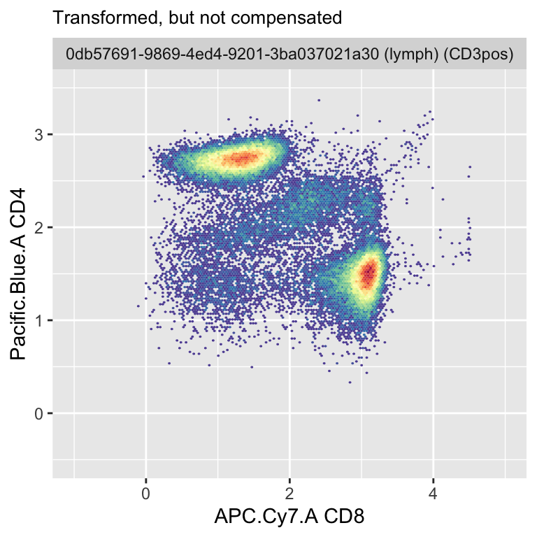
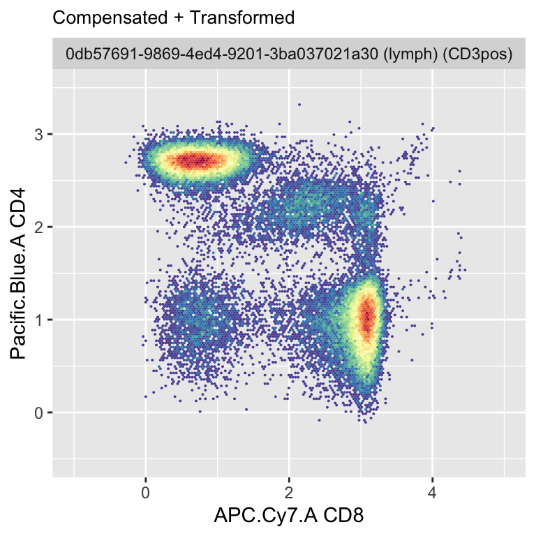

An R script.

My first commit is an R script dependent to the Bioconductor package flowCore. All else is written in base R.
The script is mostly composed of wrapper functions that calls to the base R or to flowCore packages.
It also leverages specifications by the flow cytometry operator at time of acquisition and file generation. The procedure uses the marker and channel pairing plus the spillover (AKA compensation) matrix to map the workflow. Without this information the script will fail.
The workflow performs at a per file basis. It reads in the FCS file and then compensates the intensity values before transforming values to the “logicle-scale”.
Next the data is gated using sequential k-means clustering; in order of channels the sequence is
My attached packages:
## [1] ".GlobalEnv" "package:ggcyto" "package:flowWorkspace"
## [4] "package:ncdfFlow" "package:BH" "package:flowCore"
## [7] "package:ggplot2" "package:stats" "package:graphics"
## [10] "package:grDevices" "package:utils" "package:datasets"
## [13] "package:methods" "Autoloads" "package:base"The data I sourced comes from Immport.org and the study I used to build my procedure has 453 files; 8 of which come from single-stain compensation samples (likely beads from the look of the size uniformity).
Each file takes about 1.2 seconds to process on my M1 Macbook. The reading of the FCS file and transformation of data are the biggest computational tasks.
There is a bug in the flowCore transform() method as of today. There seems to be a coding issue in the package. I believe the Bioconductor forum shows a work-around from the authors; however, I did not implement the solution at this time.
My solution simply uses a tryCatch method and return NA values when an error occurs. Of the 453 files I tried, only 10 or so failed to be rescaled. I think at the next update I should be able to correct this behavior.
There is a lot of room for improvement all around, but this is a start.
User features for the scientist that I think would be useful are:
Engineering features that would I think would improve performance would be:
Notes:
If something like this were to go into a production setting and into regulated industry then requirements and documentation would be needed.